See also the COMPARATIVE TABLE below
| GRADE | NAME | NOTES | NOTES TRANSPOSED IN C |
| I | NEAPOLITAN | 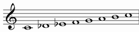 | |
| II | LEADING WHOLE-TONE | |
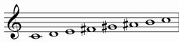 |
| III | LYDIAN AUGMENTED DOMINANT | 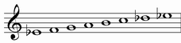 | 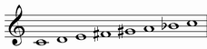 |
| IV | LYDIAN DOMINANT b6 | 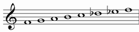 | 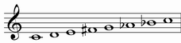 |
| V | MAJOR LOCRIAN | 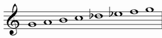 | 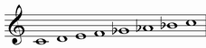 |
| VI | SEMILOCRIAN b4 | 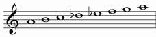 | 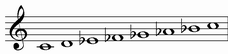 |
| VII | SUPERLOCRIAN bb3 | 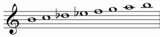 | 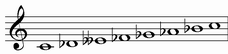 |
NEAPOLITAN |
Alternative names: Neapolitan Major, Jazz Minor flat 2
It starts from the first grade of neapolitan scale
Structure: 1222221
As we can see from the structure, this is a palindromic mode
| chords over first notes: | ||
| Triad: | Seventh chord: | Complete chord: |
| minor | minor with major seventh | |
| 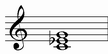 |  |
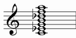 |
Chord simbols: Cm, Cm(maj7), Cm^(b9)
LEADING WHOLE-TONE |
Alternative names: Lydian Augmented sharp 6, Lydian sharp 5 sharp 6
It starts from the second grade of neapolitan scale
Structure: 2222211
| chords over first notes: | ||
| Triad: | Seventh chord: | Complete chord: |
| augmented | major seventh with augmented fifth | |
 |
 |
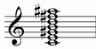 |
Chord simbols: C^+, Cmaj7(#5), Cmaj7(#5 #11)
Enharmonic chord simbols: C7(#5)
LYDIAN AUGMENTED DOMINANT |
Alternative names: Lydian sharp 5 flat7, Mixolydian sharp 5 sharp 11, Mixolydian #4 #5
It starts from the third grade of neapolitan scale
Structure: 2222112
| chords over first notes: | ||
| Triad: | Seventh chord: | Complete chord: |
| augmented | dominant with augmented fifth | |
|
|
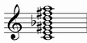 |
Chord simbols: C7(#5), C+7, C7(#5 #11)
Enharmonic chord simbols: C7(b5)
LYDIAN DOMINANT b6 |
Alternative names: Lydian flat 6 flat 7, Mixolydian sharp 11 flat 13, Mixolydian #4 b6, Lydian Minor
It starts from the fourth grade of neapolitan scale
Structure: 2221122
| chords over first notes: | ||
| Triad: | Seventh chord: | Complete chord: |
| major | dominant | |
| 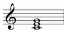 | 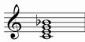 | 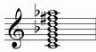 |
Chord simbols: C7, C7(#11 b13)
Enharmonic chord simbols: C7(b5), C7(#5)
MAJOR LOCRIAN |
Alternative names: Mixolydian flat 5 flat 6, Mixolydian b5 b13, Locrian sharp 2 sharp 3, Arabian
It starts from the fifth grade of neapolitan scale
Structure: 2211222
| chords over first notes: | |
| Seventh chord: | Complete chord: |
| dominant with diminished fifth | |
| 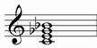 | 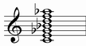 |
Chord simbols: C7(b5), C9(b5), C7(b5 b13), C9(b5 b13)
Enharmonic chord simbols: C7(#5)
SEMILOCRIAN b4 |
Alternative names: Locrian natural 2 flat 4, Semilocrian flat 4
It starts from the sixth grade of neapolitan scale
Structure: 2112222
| chords over first notes: | |
| Triad: | Seventh chord: |
| diminished | half diminished |
| 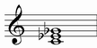 | 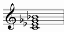 |
Enharmonic interpretation:
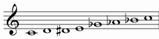
| chords over first notes: | ||
| Triad: | Seventh chord: | Complete chord: |
| augmented | dominant with augmented fifth | |
|
 |
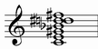 |
Enharmonic chord simbols: C7(#5 #11), C7(#5 9 #9 #11), C7(b5)
SUPERLOCRIAN bb3 |
It starts from the seventh grade of neapolitan scale
Structure: 1122222
Enharmonic interpretation:
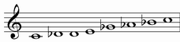
| chords over first notes: | ||
| Triad: | Seventh chord: | Complete chord: |
| augmented | dominant with augmented fifth | |
|
|
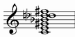 |
Enharmonic chord simbols: C7(#5 #11), C7(b5), C7(#5 b9 9 #11)
between Neapolitan scale and Whole-Tone scale
| WHOLE-TONE (Db) | Db | Eb | F | G | A | B | |||||||
| NEAPOLITAN | C | Db | Eb | F | G | A | B | C |
between Whole-Tone scale and the rest of modes from Neapolitan scale
| WHOLE-TONE (C) | C | D | E | F# | G# | A# | C | ||||||
| LEADING |
C | D | E | F# | G# | A# | B | C | |||||
| LYDIAN AUGMENTED DOMINANT | C | D | E | F# | G# | A | Bb | C | |||||
| LYDIAN DOMINANT b6 | C | D | E | F# | G | Ab | Bb | C | |||||
| MAJOR LOCRIAN | C | D | E | F | Gb | Ab | Bb | C | |||||
| SEMILOCRIAN b4 | C | D | D# | E | Gb | Ab | Bb | C | |||||
| SUPERLOCRIAN bb3 | C | Db | D | E | Gb | Ab | Bb | C |
See also Whole-Tone scale